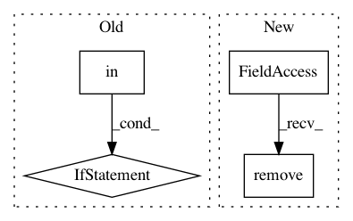

a9b190782d82a78ae52346efc93689b4f3a244fd,GPy/core/index_operations.py,ParameterIndexOperations,remove,#ParameterIndexOperations#Any#Any#,68
Before Change
self._properties[prop] = ind
def remove(self, prop, indices):
if prop in self._properties:
ind = self.create_raveled_indices(indices)
diff = numpy.setdiff1d(self._properties[prop], ind, True)
if numpy.size(diff):
self._properties[prop] = diff
else:
del self._properties[prop]
def create_raveled_indices(self, indices):
if isinstance(indices, (tuple, list)):
i = [slice(None)] + list(indices)
else:
After Change
self.tied_from.add(tied_to, tied_from._current_slice, tied_from._realshape, self.params._offset(tied_from))
self.tied_to.add(tied_to, tied_to._current_slice, tied_to._realshape, self.params._offset(tied_to))
def remove(self, tied_from, tied_to):
self.tied_from.remove(tied_to, tied_from._current_slice, tied_from._realshape, self.params._offset(tied_from))
self.tied_to.remove(tied_to, tied_to._current_slice, tied_to._realshape, self.params._offset(tied_to))
def iter_from_to_indices(self):
for k, f in self.tied_from.iteritems():
yield f, self.tied_to[k]
In pattern: SUPERPATTERN
Frequency: 3
Non-data size: 4
Instances
Project Name: SheffieldML/GPy
Commit Name: a9b190782d82a78ae52346efc93689b4f3a244fd
Time: 2013-10-11
Author: ibinbei@gmail.com
File Name: GPy/core/index_operations.py
Class Name: ParameterIndexOperations
Method Name: remove
Project Name: pantsbuild/pants
Commit Name: 8c35227c6e3c4a6b85d2f719c9a62031f5e4ca6f
Time: 2017-12-12
Author: kwlzn@users.noreply.github.com
File Name: src/python/pants/java/nailgun_io.py
Class Name: NailgunStreamWriter
Method Name: run
Project Name: onnx/onnx-coreml
Commit Name: 660fbdb4facf97ddfb46b5a4f28a80e7db3aec43
Time: 2018-09-16
Author: aseem.elec@gmail.com
File Name: onnx_coreml/_transformers.py
Class Name: ConstantsToInitializers
Method Name: __call__